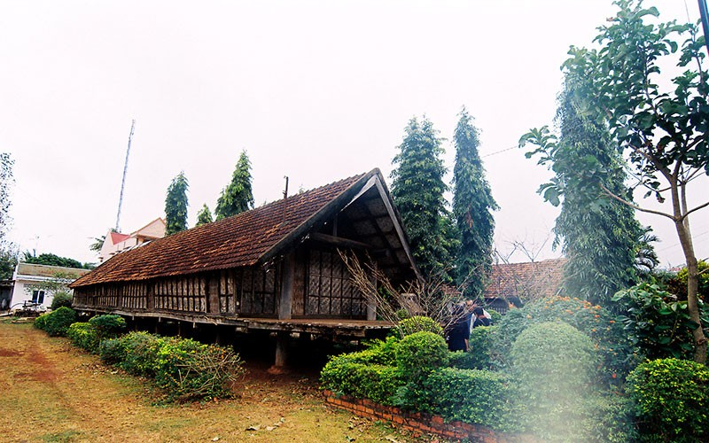
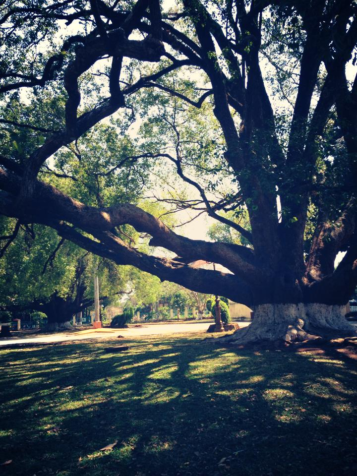

Buôn này mình hay gọi vui là Buôn nhà giàu, bởi đường xá, quang cảnh được đầu tư rất sạch sẽ và đẹp. Phía trước là các nhà sàn và nhà dài truyền thống còn khá nguyên vẹn…nhưng đằng sau đó toàn là nhà được xây dựng khá hoành tráng. Đa số các nhà đều có khoảng sân khá rộng rãi nữa.
Tiện thể tới Ako-Dhong rồi, chạy 1 xíu nữa, quẹo phải để xuống khu sinh thái hồ Ama H’rin luôn. Đi từ từ thôi nhé, để tận hưởng mùi hoa cafe bên đường, độ cong và dốc của con đường nữa. Sau đó là mùi đất đỏ, và tiến thẳng vào khu sinh thái.
Khu này mới, thích hợp để chụp hình, câu cá, nhậu nhẹt.
Đây là một trong số Biệt Điện mà Vua Bảo Đại từng ở. Ở đây trưng bày rất nhiều hiện vật có giá trị về văn hoá của hơn 44 dân tộc anh em đang quần cư sinh sống tại Đắk Lắk, trong đó không gian văn hóa cồng chiêng và các vấn đề liên quan đến bản sắc văn hóa dân tộc tại chỗ được thể hiện rõ nét.
Điều mình thích ở đây là có rất nhiều cây cổ thụ trên 100 năm tuổi và có 2 câu Long Não lớn nhất Việt Nam, tán xoè rất mát và đẹp mắt.
Ngay ngã 6 trung tâm BMT hay Toà giám mục với thiết kế như nhà dài Ê-đê và hoàn toàn bằng gỗ (toạ lạc trên đường Phan chu Trinh) cũng là nơi đáng để đến và chụp hình lưu niệm bởi lối kiến trúc rất “dân tộc”.
Chạy thẳng Lê Duẩn, rẽ trái vào đường Y Wang, chạy thẳng vào, rồi rẽ trái lần nữa, thẳng luôn là tới hồ Eakao.
Ra tới hồ rồi, quẹo trái, sẽ có khu thoáng để bạn đậu xe, có nước mía phục vụ tận nơi. Ngồi nhâm nhi miếng chuối chiên nóng hổi, ngon lành, nhấm nháp nước mía, hóng gió, ngắm trời xanh mây trắng, ngó người dân nơi đây giăng lưới, câu cá, nghe tiếng sóng vỗ… đáng để chịu khó chạy xa 1 chút.
Loanh quanh khu Buôn Đôn này thì có:
Món này thành “đặc sản” của BMT rồi, đi Buôn Đôn nhớ cưỡi voi nhen. 150k/15p 3 người, 300k/30p 3 người. Tiền nhiều hơn thì được voi cưỡi đi lội suối, băng rừng. Ít hơn thì chỉ có đi trên đường bằng – đường bộ, cho có cái gọi là cưỡi voi thôi.
Ngồi giữa núi rừng, nghe tiếng dòng sông Serepok chảy, gọi các món như gà sa lửa + cơm lam + canh cá lăng đỏ + rượu cần + rau rừng,…ra và chén.
Chụp hình, check-in. Mình nghĩ là thử ở 1 đêm ở nhà sàn trong các khu resorts này xem. Trải nghiệm cuộc sống yên tĩnh, tối chỉ nghe tiếng gió – tiếng côn trùng. Đốt lửa trại nướng bắp, nướng thịt, hàn huyên các câu chuyện…bên dòng sông Serepok cũng ko tồi.
Thẳng đường Lê Duẩn, hướng ra QL14, qua cầu 14 vài km, để ý bên trái có 1 cái bảng chỉ đường vào thác. Quẹo vào và tận hưởng các đường cong vắng vẻ, leo dốc giữa đồi – 2 bên toàn cỏ lau – phía trước là bầu trời xanh rì… Cứ chạy thẳng sẽ đến đập thuỷ điện, có thể dừng ở đây chụp hình. Đi ngược lại con đường ban nãy 1 xíu sẽ tới thác Gia Long – vào chụp hình rồi đi, chỗ này chán.
Đi ngược trở lại, gặp 1 ngã tư lớn, quẹo trái, chạy thẳng vào sẽ tới Draynur – Draysap.
Thẳng tiến đường Nguyễn Lương Bằng, tiến về QL27 *hướng đi Đà Lạt*, cách trung tâm khoảng 50km. Lak chào đón bạn. Trên đường vào, bạn có thể dừng chân tại đèo Giang Sơn để chụp ảnh, khám phá Nhà thờ Cổ.
Hồ Lak: là hồ nước ngọt tự nhiên lớn nhất tỉnh Daklak và lớn thứ hai ở Việt Nam sau Hồ Ba Bể. Xung quanh hồ có những dãy núi lớn được bao phủ bởi các cánh rừng nguyên sinh. Bạn có thể cưỡi voi lội hồ Lak, chèo thuyền độc mộc để tận hưởng vẻ đẹp hồ Lak nữa.
Biệt điện Bảo Đại: nằm ngay trên đỉnh đồi bên cạnh hồ Lak. Đây là nơi mà vua Bảo Đại nghỉ ngơi, ngắm cảnh, săn bắn. Đứng ở trên đây nhìn xuống sẽ thấy gần như trọn mặt hồ nước, một góc của người dân nơi đây, có thể thấy được cảnh các con voi chở khách dạo dọc các con đường.
Bên Hồ Lắk có buôn Jun và buôn MLiêng, những buôn làng tiêu biểu của dân tộc MNông. Hai buôn này được tổ chức thành một điểm du lịch quan trọng như những buôn bảo tồn, giới thiệu văn hóa dân tộc bản địa Tây Nguyên. Ở đây còn lưu giữ được rất nhiều những ngôi nhà dài truyền thống với mái lợp cỏ tranh vách thưng liếp nứa. Đến đây còn được thưởng thức những nét văn hóa Tây Nguyên như điệu múa lửa, múa ngày mùa, diễn xướng cồng chiêng, đàn đá,…